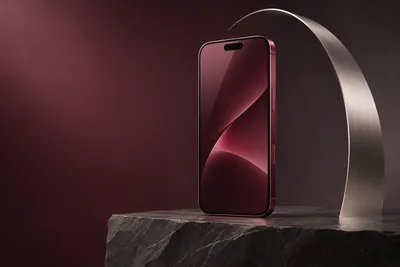
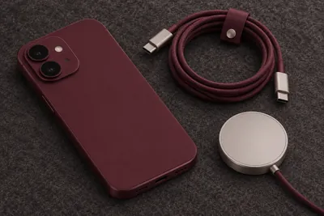
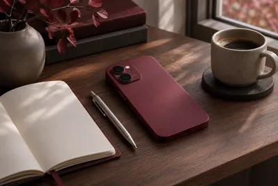
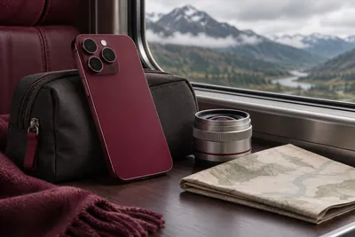
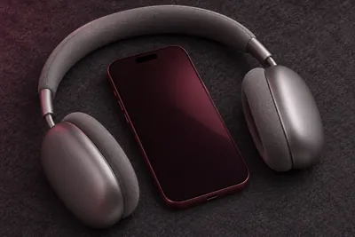
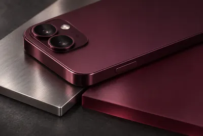

ПРО НАС
iPhone Select — про iPhone 18 Pro
Це навчальний вебпроєкт про iPhone 18 Pro у стилі Burgundy. Головна сторінка знайомить із концепцією, 360°-перегляд дає змогу дослідити макет, а каталог попередніх поколінь доповнює історію сценарієм вибору смартфона.
iPhone Select — навчальний проєкт студента групи ПП-24-1 Горобця С. Ю. Сайт демонструє сценарій вибору смартфона; замовлення, оплата та фактичний викуп пристроїв не здійснюються.
Головна ідея
Показати один новий телефон як цілісну історію: зовнішній вигляд, деталі й інтерактивний досвід. Саме тому iPhone 18 Pro стоїть першим, а старші покоління винесено в окрему частину каталогу.
Що є на сайті
- Головна — історія та дизайн iPhone 18 Pro.
- 360° огляд — наявний схематичний макет із розбиранням.
- Каталог — перша картка концепту та десять моделей iPhone 14–16 для навчального вибору.
- Ця сторінка — пояснення, відповіді на запитання та візуальні експерименти.
Навчальний формат
iPhone 18 Pro тут представлено авторським концептом без непідтверджених технічних обіцянок. Кошик, Trade-in і форма демонструють інтерфейс; реальна купівля, оплата й надсилання звернень не виконуються. Особистий кабінет працює окремо через Supabase.
Відповіді на запитання
Чому головний телефон — iPhone 18 Pro?
Це центральна тема проєкту: Burgundy-дизайн та інтерактивний 3D-концепт. iPhone 14–16 залишаються окремим каталогом для порівняння й навчального сценарію покупки.
Який обсяг пам’яті обрати?
Для великої бібліотеки фото й відео доречний більший обсяг. Конфігуратор показує лише варіанти пам’яті, які існують для обраної моделі.
Чи всі кольори доступні для кожної моделі?
Ні. Список кольорів залежить від моделі та відповідає специфікації Apple. Це не підтвердження наявності товару.
Як порівняти моделі?
У каталозі введіть назву або оберіть її в полі «Знайти модель». Пошук застосовується до карток і таблиці. iPhone 18 Pro має окрему концептуальну картку без вигаданих характеристик.
Як працює Trade-in?
Це навчальний калькулятор: база моделі множиться на коефіцієнти пам’яті та стану. Результат не є ринковою оцінкою або пропозицією викупу.
Чи можна купити iPhone за вказаною ціною?
Реальні ціни й наявність не підтверджені. Сайт не приймає оплату та не оформлює доставку; суми Trade-in є умовними.
Чи точний 360°-макет?
Переглядач демонструє схематичний Burgundy-концепт iPhone 18 Pro. Він призначений для взаємодії та навчальної анімації, а не для ремонту або перевірки реальної конструкції.
Що зберігає кошик?
Кошик зберігає моделі та кількість у цьому браузері. Навчальне оформлення створює локальний підсумок без оплати, доставки чи надсилання замовлення. Колір і пам’ять у кошику не резервуються.
Навіщо особистий кабінет?
Реєстрація та вхід працюють через серверний маршрут і Supabase. Обліковий запис не перетворює цей навчальний сайт на магазин; кошик залишається локальним.
Чи надсилається форма звернення?
Ні. Форма лише перевіряє введення у браузері та показує повідомлення про навчальну демонстрацію. Відповідь менеджера не передбачена.
Де зберігаються мої дані?
Тема й кошик зберігаються локально, якщо браузер дозволяє. Дані облікового запису обробляє Supabase. Поля демоформи не надсилаються та очищаються після закриття повідомлення. Зовнішні сервіси мають власні політики.
Чи це офіційний магазин Apple?
Ні. iPhone Select — навчальний проєкт РГР. Галерея містить авторські ШІ-концепції, а посилання Apple наведено як джерела характеристик.
Візуальна лабораторія проєкту
Шість ШІ-етюдів про Burgundy, матеріали й повсякденні сценарії. Це пошук стилістики для iPhone Select, а не фотографії iPhone 18 Pro чи моделей із каталогу.
Шість авторських композицій для знайомства зі стилістикою. Гортайте кнопками або клавішами стрілок, коли галерея у фокусі.












Зображення доступні без інтерактивної галереї.